Week 5 focused on implementing additional security controls and validating them using monitoring and audit checks.
Building on the SSH hardening completed in Week 4, the system was further protected through firewall enforcement,
mandatory access control (AppArmor), automatic security updates, and brute-force protection using Fail2ban.
The aim was to reduce attack surface, ensure consistent patching, and provide evidence that security controls
were active and functioning correctly.
Key Activities
Firewall: confirmed UFW was enabled and restricting access as intended.
AppArmor: installed/verified AppArmor utilities and switched profiles into enforce mode.
Automatic Updates: installed and configured unattended-upgrades to support automatic security patching.
Brute-force Protection: installed Fail2ban, confirmed the service is active, and reviewed jail configuration/status.
Security Monitoring: performed baseline/security checks and reviewed logs where applicable.
Why these controls matter
UFW (Firewall): blocks unsolicited access and limits which hosts/ports can reach the server.
AppArmor: constrains what applications can do, reducing impact if a process is compromised.
Unattended Upgrades: helps ensure security patches are applied automatically and consistently.
Fail2ban: detects repeated failed logins and bans abusive IPs to slow/stop brute-force attempts.
The screenshots below provide evidence of the installation, configuration, and validation of these Week 5 controls.
Evidence Screenshots
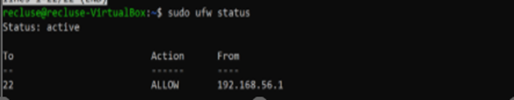
Firewall status (UFW active) showing SSH access allowed (restricted as configured).AppArmor / AppArmor utilities installation status (packages installed and available).
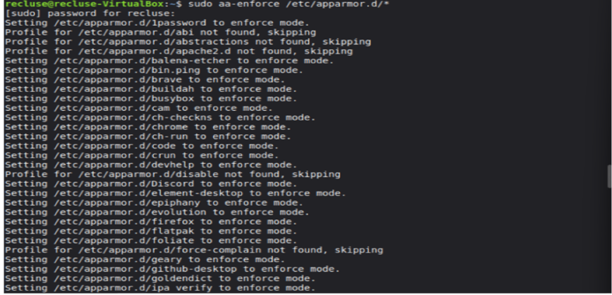
Switching AppArmor profiles into enforce mode to actively restrict processes.
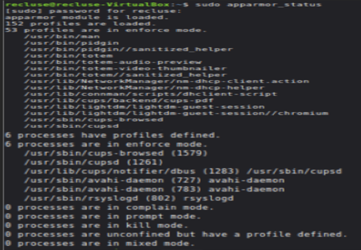
AppArmor status output confirming profiles are loaded and enforcement is active.Log review check for AppArmor events using journalctl (evidence of log inspection).
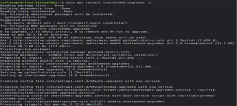
Installation output for unattended-upgrades (automatic updates component).Unattended upgrades configuration screen (enabling automatic updates).
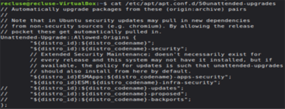
Configuration file evidence (/etc/apt/apt.conf.d/50unattended-upgrades) showing update origins/settings.
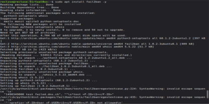
Fail2ban installation output (brute-force mitigation tool installed).
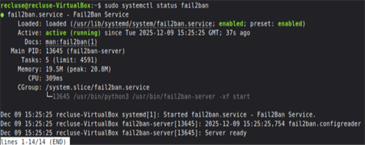
Fail2ban service status confirming it is active and running.
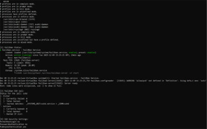
Fail2ban client/jail status output showing which jail(s) are enabled and monitored.
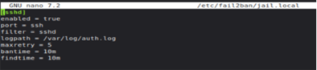
Jail configuration snippet (e.g., SSH jail parameters such as bantime/findtime/maxretry).
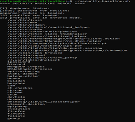
Security baseline script output summarising security posture checks and active protections.
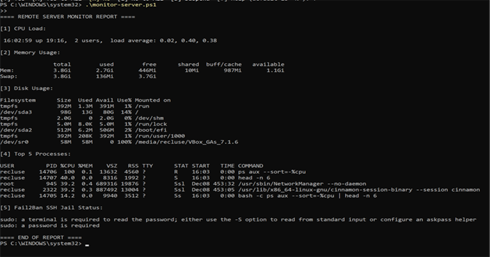
Remote monitoring / baseline reporting evidence (system metrics and security checks gathered remotely).